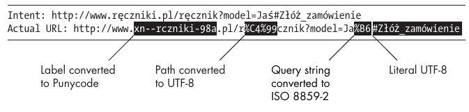
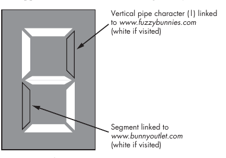

Awesome book, joy to read. It’s dense, but written in a cheerful tone. The author knows a lot about web security. It’s not bound to a narrow set of technologies, frameworks, OSes or browsers. It touches a little bit of everything. But it doesn’t make it shallow. I wasn’t aware about 90% of information presented in this book. It has no cumbersome and useless terms security charlatans like. It’s very practical and full of advice.
I felt slightly uncomfortable because it was written around 2011. Some facts are clearly outdated (Flash is dead in 2019), some “things to come” became a bedrock of the modern web (CORS). At the same time I was glad it mentions those outdated facts. It provides historical perspective so you can see why the Web works as it works. For example, it has an explanation why “Download/Open” buttons have such a weird and annoying delay.
Just fifteen years ago, the Web was as simple as it was unimportant.
… experts have long been dismissive of the
whole web security ruckus, unable to understand what it was all about. They
have been quick to label web security flaws as trivial manifestations of the
confused deputy problem or of some other catchy label outlined in a trade journal three decades ago.
A system is secure if it behaves precisely in the manner intended and does nothing more.
This definition is neat and vaguely outlines an abstract goal, but it tells
very little about how to achieve it. It’s computer science, but in terms of specificity, it bears a striking resemblance to a poem by Victor Hugo:
Love is a portion of the soul itself, and it is of the same nature as the celestial breathing of the atmosphere of paradise.
For a long time, engineers working on general-purpose software have
made seemingly arbitrary assumptions about the minimal level of computer
proficiency required of their users. Most of these assumptions have been with-out serious consequences; the incorrect use of a text editor, for instance, would
typically have little or no impact on system security. Incompetent users simply
would not be able to get their work done, a wonderfully self-correcting issue.
Web browsers do not work this way, however. Unlike certain complicated
software, they can be successfully used by people with virtually no computer
training, people who may not even know how to use a text editor. But at the
same time, browsers can be operated safely only by people with a pretty good
understanding of computer technology and its associated jargon, including
topics such as Public-Key Infrastructure. Needless to say, this prerequisite is
not met by most users of some of today’s most successful web applications.
In the traditional model followed by virtually all personal computers
over the last 15 years or so, there are very clear boundaries between high-level data objects (documents), user-level code (applications),
and the operating system kernel that arbitrates all cross-application communications and
hardware input/output (I/O) and enforces configurable security rules should
an application go rogue. These boundaries are well studied and useful for
building practical security schemes. A file opened in your text editor is unlikely
to be able to steal your email, unless a really unfortunate conjunction of
implementation flaws subverts all these layers of separation at once.
In the browser world, this separation is virtually nonexistent: Documents
and code live as parts of the same intermingled blobs of HTML, isolation
between completely unrelated applications is partial at best (with all sites
nominally sharing a global JavaScript environment), and many types of inter-action between sites are
implicitly permitted with few, if any, flexible, browser-level security arbitration frameworks.
The overall susceptibility of an ecosystem composed of several different software products could be expected to be equal to a simple sum of the flaws
contributed by each of the applications. In some cases, the resulting exposure may be less (diversity improves resilience), but one would not expect it
to be more.
The Web is once again an exception to the rule. The security community
has discovered a substantial number of issues that cannot be attributed to any
particular piece of code but that emerge as a real threat when various browsers try to interact with each other.
Several dozen additional mechanisms, with no relation to
the same-origin model, control other key aspects of browser behavior (essentially implementing what each author considered to be the best approach to
security controls that day).
As it turns out, hundreds of small, clever hacks do not necessarily add up
to a competent security opus. The unusual lack of integrity makes it very difficult even to decide where a single application ends and a different one
begins. Given this reality, how does one assess attack surfaces, grant or take
away permissions, or accomplish just about any other security-minded task?
Too often, “by keeping your fingers crossed” is the best response we can give.
Curiously, many well-intentioned attempts to improve security by
defining new security controls only make the problem worse. Many of these
schemes create new security boundaries that, for the sake of elegance, do not
perfectly align with the hairy juxtaposition of the existing ones. When the
new controls are finer grained, they are likely to be rendered ineffective by
the legacy mechanisms, offering a false sense of security; when they are more
coarse grained, they may eliminate some of the subtle assurances that the
Web depends on right now.
Although the RFC permits only canonical notations for IP addresses, standard C libraries used by most applications are much more relaxed, accepting
noncanonical IPv4 addresses that mix octal, decimal, and hexadecimal notation or concatenate some or all of the octets into a single integer. As a result,
the following options are recognized as equivalent:
http://127.0.0.1/ This is a canonical representation of an IPv4 address.
http://0x7f.1/ This is a representation of the same address that uses a
hexadecimal number to represent the first octet and concatenates all the
remaining octets into a single decimal value.
http://017700000001/ The same address is denoted using a 0-prefixed
octal value, with all octets concatenated into a single 32-bit integer.
One fascinating behavior of the URL parsers in all of the mainstream browsers is their
willingness to treat the character “ ” (ideographic full stop, Unicode point U+3002)
identically to a period in hostnames but not anywhere else in the URL.
This is reportedly because certain Chinese keyboard mappings make it much easier to type this symbol
than the expected 7-bit ASCII value.
Most web developers are accustomed to a particular layout of the query
string; this familiar format is generated by browsers when handling HTML-based forms and follows this syntax:
name1=value1&name2=value2...
Surprisingly, such layout is not mandated in the URL RFCs. Instead, the
query string is treated as an opaque blob of data that may be interpreted by
the final recipient as it sees fit, and unlike the path, it is not encumbered
with specific parsing rules.
The fragment ID is an opaque value with a role similar to the query string
but that provides optional instructions for the client application rather than
the server. (In fact, the value is not supposed to be sent to the server at all.)
Neither the format nor function of the fragment ID is clearly specified in
the RFCs, but it is hinted that it may be used to address “subresources” in the
retrieved document or to provide other document-specific rendering cues.
In practice, fragment identifiers have only a single sanctioned use in
the browser: that of specifying the name of an anchor HTML element for
in-document navigation. The logic is simple. If an anchor name is supplied in
the URL and a matching HTML tag can be located, the document will be
scrolled to that location for viewing; otherwise, nothing happens. Because
the information is encoded in the URL, this particular view of a lengthy document could be easily shared with others or bookmarked. In this use, the
meaning of a fragment ID is limited to scrolling an existing document, so
there is no need to retrieve any new data from the server when only this portion of the URL is updated in response to user actions.
This interesting property has led to another, more recent and completely
ad hoc use of this value: to store miscellaneous state information needed by
client-side scripts. For example, consider a map-browsing application that
puts the currently viewed map coordinates in the fragment identifier so that
it will know to resume from that same location if the link is bookmarked or
shared. Unlike updating the query string, changing the fragment ID on-the-fly will not trigger a time-consuming page reload, making this data-storage
trick a killer feature.
How to parse an URL (yeah, it’s not easy to do correctly):
Extract the scheme name.
Consume the hierarchical URL identifier.
Grab the authority section.
Find the credentials, if any.
Extract the destination address.
Identify the path (if present).
Extract the query string (if present).
Extract the fragment identifier (if present).
Here I cut explanations how to do each step properly. Every step has pitfalls.
Internationalized Domain Names in Applications (IDNA) and Punycode
When IDNA was proposed and first implemented in browsers, nobody
seriously considered the consequences of this issue. Browser vendors apparently assumed that DNS registrars would prevent people from registering
look-alike names, and registrars figured it was the browser vendors’ problem
to have unambiguous visuals in the address bar.
In 2002 the significance of the problem was finally recognized by all
parties involved. That year, Evgeniy Gabrilovich and Alex Gontmakher published “The Homograph Attack,”11 a paper exploring the vulnerability in
great detail. They noted that any registrar-level work-arounds, even if implemented, would have a fatal flaw.
An attacker could always purchase a whole-some top-level domain and then, on his own name server, set up a subdomain
record that, with the IDNA transformation applied, would decode to a string
visually identical to example.com/ (the last character being merely a nonfunctional look-alike of the actual ASCII slash). The result would be:
There is nothing that a registrar can do to prevent this attack, and the
ball is in the browser vendors’ court. But what options do they have, exactly?
As it turns out, there aren’t many. We now realize that the poorly envisioned IDNA standard cannot be fixed in a simple and painless way. Browser
developers have responded to this risk by reverting to incomprehensible
Punycode when a user’s locale does not match the script seen in a particular
DNS label (which causes problems when browsing foreign sites or when using
imported or simply misconfigured computers); permitting IDNA only in certain country-specific,
top-level domains (ruling out the use of international-ized domain names in .com and other high-profile TLDs); and blacklisting
certain “bad” characters that resemble slashes, periods, white spaces, and
so forth (a fool’s errand, given the number of typefaces used around the
world).
These measures are drastic enough to severely hinder the adoption of
internationalized domain names, probably to a point where the standard’s
lingering presence causes more security problems than it brings real usability
benefits to non-English users.
Combining all these incompatible encoding strategies can make for an amusing mix.
Consider this example URL of a made-up Polish-language towel shop:

URL Security Cheat Sheet
When Constructing Brand-New URLs Based on User Input
If you allow user-supplied data in path, query, or fragment ID: If one of the section
delimiters manages to get through without proper escaping, the URL may have a different effect from what you intended (for example, linking one of the user-visible HTML
buttons to the wrong server-side action). It is okay to err on the side of caution: When
inserting an attacker-controlled field value, you can simply percent-escape everything
but alphanumerics.
If you allow user-supplied scheme name or authority section: This is a major code injection and phishing risk! Apply the relevant input-validation rules outlined below.
When Designing URL Input Filters
Relative URLs: Disallow or explicitly rewrite them to absolute references to avoid trouble.
Anything else is very likely unsafe.
Scheme name: Permit only known prefixes, such as http://, https://, or ftp://. Do not use
blacklisting instead; it is extremely unsafe.
Authority section: Hostname should contain only alphanumerics, “-”, and “.” and can only
be followed by “/”, “?”, “#”, or end-of-string. Allowing anything else will backfire. If you
need to examine the hostname, make sure to make a proper right-hand substring match.
In rare cases, you might need to account for IDNA, IPv6 bracket notation, port numbers, or HTTP credentials in the URL. If so, you must fully parse the URL, validate all sections and reject anomalous values, and reserialize them into a nonambiguous, canonical, well-escaped representation.
When Decoding Parameters Received Through URLs
Do not assume that any particular character will be escaped just because the standard says
so or because your browser does it. Before echoing back any URL-derived values or putting them inside database queries, new URLs, and so on, scrub them carefully for dangerous characters.
Encapsulating Pseudo-Protocols
The common property of many encapsulating protocols is that they allow
the attacker to hide the actual URL that will be ultimately interpreted by the
browser from naïve filters: view-source:javascript: (or even view-source:view-source:javascript:) followed by malicious code is a simple way to accomplish
this. Some security restrictions may be present to limit such trickery, but they
should not be relied upon. Another significant problem, recurring especially
with Microsoft’s mhtml:, is that using the protocol may ignore some of the
content directives provided by the server on HTTP level, possibly leading
to widespread misery.
Closing Note on Scheme Detection
The sheer number of pseudo-protocols is the primary reason why web applications need to carefully screen user-supplied URLs.
The wonky and browser-specific URL-parsing patterns, coupled with the open-ended nature of the
list of supported schemes, means that it is unsafe to simply blacklist known
bad schemes; for example, a check for javascript: may be circumvented if this
keyword is spliced with a tab or a newline, replaced with vbscript:, or prefixed
with another encapsulating scheme.
Not only LF but also CR characters must be stripped from any attacker-controlled values that appear anywhere in HTTP headers.
To illustrate the problem, consider the following server response, where a user-supplied and insufficiently sanitized value appears in one of the headers:
To Internet Explorer, this response may appear as:
HTTP/1.1 200 OK
Set-Cookie: last_search_term=
<html><body><h1>Hi!
Action completed.
In fact, the class of vulnerabilities related to HTTP header newline
smuggling—be it due to this inconsistency or just due to a failure to filter any
type of a newline—is common enough to have its own name: header injection
or response splitting.
When complaining about the omissions in the HTTP RFCs, it is important to recognize
that the alternatives can be just as problematic. In several scenarios outlined in that
RFC, the desire to explicitly mandate the handling of certain corner cases led to patently
absurd outcomes. One such example is the advice on parsing dates in certain HTTP
headers, at the request of section 3.3 in RFC 1945. The resulting implementation (the
prtime.c file in the Firefox codebase) consists of close to 2,000 lines of extremely
confusing and unreadable C code just to decipher the specified date, time, and time zone in
a sufficiently fault-tolerant way (for uses such as deciding cache content expiration).
Food for thought: A fascinating but largely non-security-related survey of dozens
of inconsistencies associated with the handling of just a single HTTP header—
Content-Disposition—can be found on a page maintained by Julian Reschke:
http://greenbytes.de/tech/tc2231.
It is also worth noting that when duplicate semicolon-delimited fields are
found in a single HTTP header, their order of precedence is not defined by
the RFC. In the case of filename= in Content-Disposition, all mainstream browsers
use the first occurrence. But there is little consistency elsewhere. For example,
when extracting the URL= value from the Refresh header (used to force reloading the page after a specified amount of time), Internet Explorer 6 will fall
back to the last instance, yet all other browsers will prefer the first one. And
when handling Content-Type, Internet Explorer, Safari, and Opera will use the
first charset= value, while Firefox and Chrome will rely on the last.
Another risk of HTTP caching is associated with unsafe networks, such
as public Wi-Fi networks, which allow an attacker to intercept requests to certain URLs and return modified, long-cacheable contents on requests to the
victim. If such a poisoned browser cache is then reused on a trusted network,
the injected content will unexpectedly resurface. Perversely, the victim does
not even have to visit the targeted application: A reference to a carefully chosen sensitive domain can be injected by the attacker into some other context.
There are no good solutions to this problem yet; purging your browser cache
after visiting Starbucks may be a very good idea.
Unfortunately, it is typically necessary for servers to return both HTTP/1.0
and HTTP/1.1 caching directives, because certain types of legacy commercial proxies do not understand Cache-Control correctly. In order to reliably
prevent caching over HTTP, it may be necessary to use the following set of
response headers:
Although HTTP authentication is seldom encountered on the Internet,
it still casts a long shadow over certain types of web applications. For example,
when an external, attacker-supplied image is included in a thread on a message board, and the server hosting that image suddenly decides to return
“401 Unauthorized” on some requests, users viewing the thread will be presented out of the blue with a somewhat cryptic password prompt.
After double-checking the address bar, many will probably confuse the prompt for a request
to enter their forum credentials, and these will be immediately relayed to the
attacker’s image-hosting server. Oops.
The two credential-passing methods specified in the original RFC are
known as basic and digest. The first one essentially sends the passwords in
plaintext, encoded as base64. The other computes a one-time cryptographic
hash that protects the password from being viewed in plaintext and prevents
the Authorization header from being replayed later. Unfortunately, modern
browsers support both methods and do not distinguish between them in any
clear way. As a result, attackers can simply replace the word digest with basic in
the initial request to obtain a clean, plaintext password as soon as the user
completes the authentication dialog. Surprisingly, section 4.8 of the RFC predicted this risk and offered some helpful yet ultimately ignored advice:
User agents should consider measures such as presenting a visual indication
at the time of the credentials request of what authentication scheme is to be used,
or remembering the strongest authentication scheme ever requested by a server
and produce a warning message before using a weaker one. It might also be a good idea
for the user agent to be configured to demand Digest authentication in general, or from specific sites.
Set-Cookie: Domain=
This parameter allows the cookie to be scoped to a domain
broader than the hostname that returned the Set-Cookie header. The
exact rules and security consequences of this scoping mechanism are
explored in Chapter 9.
Contrary to what is implied in RFC 2109, it is not possible to scope
cookies to a specific hostname when using this parameter. For example,
domain=example.com will always match www.example.com as well.
Omitting domain is the only way to create host-scoped cookies, but even
this approach is not working as expected in Internet Explorer.
The low-level syntax of the language aside, HTML is also the subject of a fascinating
conceptual struggle: a clash between the ideology and the reality of
the online world. Tim Berners-Lee always championed the vision of a semantic
web, an interconnected system of documents in which every functional block,
such as a citation, a snippet of code, a mailing address, or a heading, has its
meaning explained by an appropriate machine-readable tag (say, <cite>, <code>,
<address>, or <h1> to <h6>).
This approach, he and other proponents argued, would make it easier
for machines to crawl, analyze, and index the content in a meaningful way,
and in the near future, it would enable computers to reason using the sum
of human knowledge. According to this philosophy, the markup language
should provide a way to stylize the appearance of a document, but only as
an afterthought.
Sir Berners-Lee has never given up on this dream, but in this one regard,
the actual usage of HTML proved to be very different from what he wished for.
Web developers were quick to pragmatically distill the essence of HTML 3.2
into a handful of presentation-altering but semantically neutral tags, such as
<font>, <b>, and <pre>, and saw no reason to explain further the structure of
their documents to the browser. W3C attempted to combat this trend but with
limited success. Although tags such as <font> have been successfully obsoleted and largely abandoned in favor of CSS, this is only because stylesheets
offered more powerful and consistent visual controls. With the help of CSS,
the developers simply started relying on a soup of semantically agnostic <span>
and <div> tags to build everything from headings to user-clickable buttons, all
in a manner completely opaque to any automated content extraction tools.
HTTP Security Cheat Sheet
When Handling User-Controlled Filenames in Content-Disposition Headers
If you do not need non-Latin characters: Strip or substitute any characters except for alpha-numerics, “.”, “-”, and “_”. To protect your users against potentially harmful or deceptive
filenames, you may also want to confirm that at least the first character is alphanumeric
and substitute all but the rightmost period with something else (e.g., an underscore).
Keep in mind that allowing quotes, semicolons, backslashes, and control characters
(0x00–0x1F) will introduce vulnerabilities.
If you need non-Latin names: You must use RFC 2047, RFC 2231, or URL-style percent
encoding in a browser-dependent manner. Make sure to filter out control characters
(0x00–0x1F) and escape any semicolons, backslashes, and quotes.
When Putting User Data in HTTP Cookies
Percent-encode everything except for alphanumerics. Better yet, use base64. Stray quote
characters, control characters (0x00–0x1F), high-bit characters (0x80–0xFF), commas,
semicolons, and backslashes may allow new cookie values to be injected or the meaning
and scope of existing cookies to be altered.
When Sending User-Controlled Location Headers
See above. Parse and normalize the URL, and confirm that the
scheme is on a whitelist of permissible values and that you are comfortable redirecting
to the specified host.
Make sure that any control and high-bit characters are escaped properly. Use Puny-code for hostnames and percent-encoding for the remainder of the URL.
When Sending User-Controlled Redirect Headers
Follow the advice provided for Location. Note that semicolons are unsafe in this header
and cannot be escaped reliably, but they also happen to have a special meaning in some
URLs. Your choice is to reject such URLs altogether or to percent-encode the “;” character, thereby violating the RFC-mandated syntax rules.
When Constructing Other Types of User-Controlled Requests or Responses
Examine the syntax and potential side effects of the header in question. In general, be
mindful of control and high-bit characters, commas, quotes, backslashes, and semicolons;
other characters or strings may be of concern on a case-by-case basis. Escape or substitute
these values as appropriate.
When building a new HTTP client, server, or proxy: Do not create a new implementation
unless you absolutely have to. If you can’t help it, read this chapter thoroughly and aim to
mimic an existing mainstream implementation closely. If possible, ignore the RFC-provided
advice about fault tolerance and bail out if you encounter any syntax ambiguities.
The set of parsing behaviors discussed in the previous sections is by no means
exhaustive. In fact, an entire book has been written on this topic: Inquisitive
readers are advised to grab Web Application Obfuscation (Syngress, 2011) by
Mario Heiderich, Eduardo Alberto Vela Nava, Gareth Heyes, and David
Lindsay—and then weep about the fate of humanity. The bottom line is
that building HTML filters that try to block known dangerous patterns,
and allow the remaining markup as is, is simply not feasible.
The only reasonable approach to tag sanitization is to employ a realistic
parser to translate the input document into a hierarchical in-memory document tree, and then scrub this representation for all unrecognized tags and
parameters, as well as any undesirable tag/parameter/value configurations.
At that point, the tree can be carefully reserialized into a well-formed, well-escaped HTML that will not flex any of the error correction muscles in the
browser itself. Many developers think that a simpler design should be possible, but eventually they discover the reality the hard way.
HTML Security Cheat Sheet
Good Engineering Hygiene for All HTML Documents
Always output consistent, valid, and browser-supported Content-Type and charset information to prevent the document from being interpreted contrary to your original intent.
When Generating HTML Documents with Attacker-Controlled Bits
This task is difficult to perform consistently across the entire web application, and it is one of
the most significant sources of web application security flaws. Consider using context-sensitive
auto-escaping frameworks, such as JSilver or CTemplate, to automate it. If that is not possible,
read on.
User-supplied content in text body: Always entity-encode “<”, “>”, and “&”. Note that certain other patterns may be dangerous in certain non-ASCII-compatible output encodings.
If applicable, consult Chapter 13.
Keep in mind that some Unicode metacharacters (e.g., U+202E) alter the direction
or flow of the subsequent text. It may be desirable to remove them in particularly sensitive uses.
Tag-specific style and on parameters: Multiple levels of escaping are required. This practice is extremely error prone, meaning not really something to attempt. If it is absolutely
unavoidable, review the cheat sheets in Chapters 5 and 6.
All other HTML parameter values: Always use quotes around attacker-controlled input.
Entity-encode “<”, “>”, “&”, and any stray quotes. Remember that some parameters
require additional validation. For URLs, see the cheat sheet in Chapter 2.
Never attempt to blacklist known bad values in URLs or any other parameters; doing
so will backfire and may lead to script execution flaws.
Special parsing modes (e.g., <script> and <style> blocks): For values appearing inside
quoted strings, replace quote characters, backslash, “<”, “>”, and all nonprintable characters with language-appropriate escape codes.
For values appearing outside strings, exercise extreme caution and allow only carefully validated, known, alphanumeric values.
In XHTML mode, remember to wrap the entire script section in a CDATA block.
Avoid cases that require multiple levels of encoding, such as building parameters to the
JavaScript eval(...) function using attacker-supplied strings. Never place user-controlled
data inside HTML comments, !-type or ?-type tags, and other nonessential or unusually
parsed blocks.
When Converting HTML to Plaintext
A common mistake is to strip only well-formed tags. Remember that all left-angle brackets
must be removed, even if no matching right-angle bracket is found. To minimize the risk
of errors, always entity-escape angle brackets and ampersands in the generated output, too.
When Writing a Markup Filter for User Content
Use a reasonably robust HTML parser to build an in-memory
document tree. Walk the tree, removing any unrecognized or unnecessary tags and
parameters and scrubbing any undesirable tags/parameters/value combinations.
When done, reserialize the document, making sure to apply proper escaping rules to
parameter values and text content. (See the first tip on this cheat sheet.) Be aware of the
impact of special parsing modes.
Because of the somewhat counterintuitive namespace interactions with JavaScript, do
not allow name and id parameters on user-supplied markup—at least not without reading
Chapter 6 first.
Do not attempt to sanitize an existing, serialized document in place. Doing so inevitably
leads to security problems.
CSS Security Cheat Sheet
When Loading Remote Stylesheets
You are linking the security of your site to the originating domain of the stylesheet. Even
in browsers that do not support JavaScript expressions inside stylesheets, features such as
conditional selectors and url(…) references can be used to exfiltrate portions of your site.
When in doubt, make a local copy of the data instead.
On HTTPS sites, require stylesheets to be served over HTTPS as well.
When Putting Attacker-Controlled Values into CSS
Strings and URLs inside stand-alone blocks. Always use quotes. Backslash-escape all con-
trol characters (0x00–0x1F), “\”, “<”, “>”, “{“, “}”, and quotes using numerical codes. It is
also preferable to escape high-bit characters. For URLs, consult the cheat sheet in Chap-
ter 2 to avoid code injection vulnerabilities.
Strings in style parameters. Multiple levels of escaping are involved. The process is error
prone, so do not attempt it unless absolutely necessary. If it is unavoidable, apply the above
CSS escaping rules first and then apply HTML parameter encoding to the resulting string.
Nonstring attributes. Allow only whitelisted alphanumeric keywords and carefully validated
numerical values. Do not attempt to reject known bad patterns instead.
When Filtering User-Supplied CSS
Remove all content outside of functional rulesets. Do not preserve or generate user-
controlled comment blocks, @-directives, and so on.
Carefully validate selector syntax, permitting only alphanumerics; underscores; whitespaces;
and correctly positioned colons, periods, and commas before “{”. Do not permit
complex text-matching selectors; they are unsafe.
Parse and validate every rule in the { ... } block. Permit only whitelisted properties with
well-understood consequences and confirm that they take expected, known safe values.
Note that strings passed to certain properties may sometimes be interpreted as URLs even
in the absence of a url(...) wrapper.
Encode every parameter value using the rules outlined earlier in this section. Bail out on
any syntax abnormalities.
Keep in mind that unless specifically prevented from doing so, CSS may position user
content outside the intended drawing area or redefine the appearance of any part of the
UI of your application. The safest way to avoid this problem is to display the untrusted
content inside a separate frame.
When Allowing User-Specified Class Values on HTML Markup
Ensure that user-supplied content can’t reuse class names that are used for any part of the
application UI. If a separate frame is not being used, it’s advisable to maintain separate
namespace prefixes.
The information available through the navigator and screen objects is
sufficient to uniquely fingerprint many users with a high degree of confidence. This
long-known property is emphatically demonstrated by Panopticlick, a project of the
Electronic Frontier Foundation: https://panopticlick.eff.org.
Browser-side Script Security Cheat Sheet
When Loading Remote Scripts
As with CSS, you are linking the security of your site to the originating domain of the script.
When in doubt, make a local copy of the data instead. On HTTPS sites, require all scripts to
be served over HTTPS.
When Parsing JSON Received from the Server
Rely on JSON.parse(...) where supported. Do not use eval(...) or the eval-based implementation
provided in RFC 4627. Both are unsafe, especially when processing data from third parties. A
later implementation from the author of RFC 4627, json2.js, is probably okay.
When Putting User-Supplied Data Inside JavaScript Blocks
Stand-alone strings in <script> blocks: Backslash-escape all control characters (0x00–0x1F),
“\”, “<”, “>”, and quotes using numerical codes. It is also preferable to escape high-bit
characters.
Do not rely on user-supplied strings to construct dynamic HTML. Always use safe
DOM features such as innerText or createTextNode(...) instead. Do not use user-supplied
strings to construct second-order scripts; avoid eval(...), setTimeout(...), and so on.
Stand-alone strings in separately served scripts: Follow the same rules as for <script>
blocks. If your scripts contain any sensitive, user-specific information, be sure to account
for cross-site script inclusion risks; use reliable parser-busting prefixes, such as “)}]’\n”,
near the beginning of a file or, at the very minimum, use a proper JSON serialization with
no padding or other tweaks. Additionally, consult Chapter 13 for tips on how to prevent
cross-site scripting in non-HTML content.
Strings in inlined event handlers, javascript: URLs, and so on: Multiple levels of escaping
are involved. Do not attempt this because it is error prone. If unavoidable, apply the above
JS escaping rules first and then apply HTML or URL parameter encoding, as applicable,
to the resulting string. Never use in conjunction with eval(...), setTimeout(...), innerHTML,
and such.
Nonstring content: Allow only whitelisted alphanumeric keywords and carefully validated
numerical values. Do not attempt to reject known bad patterns instead.
When Interacting with Browser Objects on the Client Side
Generating HTML content on the client side: Do not resort to innerHTML, document.write(...),
and similar tools because they are prone to introducing cross-site scripting flaws, often in
unexpected ways. Use safe methods such as createElement(...) and appendChild(...) and
properties such as innerText or textContent to construct the document instead.
Relying on user-controlled data: Make no assumptions about the escaping rules applied
to any values read back from the browser and, in particular, to location properties and
other external sources of URLs, which are inconsistent and vary from one implementation to another. Always do your own escaping.
If You Want to Allow User-Controlled Scripts on Your Pages
It is virtually impossible to do this safely. Experimental JavaScript rewriting frameworks,
such as Caja (http://code.google.com/p/google-caja/), are the only portable option. Also see
Chapter 16 for information on sandboxed frames, an upcoming alternative for embedding
untrusted gadgets on web pages.
There is virtually no research into the security properties of VBScript,
the robustness of the parser, or its potential incompatibilities with the mod-ern DOM. Anecdotal evidence suggests that the language receives no consistent scrutiny on Microsoft’s end,
either. For example, the built-in MsgBox can be used to display modal, always-on-top prompts with a degree of flexibility completely unheard of in the JavaScript world,
leaving alert(...) in the dust.
In the most common scenario, the namespace for the entire XML file is
defined only once and is attached to the top-level tag. In principle, however,
any number of different xmlns directives may appear in a single file, giving
different meanings to each section of the document. For example:
Faced with such input, the general-purpose renderer will usually do
its best to make sense of all the recognized namespaces and assemble the
markup into a single, consistent document with a normal Document Object
Model representation. And, if any one of the recognized namespaces happens to support scripting, any embedded scripts will execute, too.
Because of the somewhat counterintuitive xmlns handling behavior,
Content-Type is not a suitable way to control how a particular XML document
will be parsed; the presence of a particular top-level xmlns directive is also not
a guarantee that no other data formats will be honored later on. Any attacker-controlled XML-based formats must therefore be handled with care and sanitized very thoroughly.
Non-HTML Document Type Security Cheat Sheet
When Hosting XML-Based Document Formats
Assume that the payload may be interpreted as XHTML or some other script-enabled document type, regardless of the Content-Type and the top-level xmlns directive. Do not allow unconstrained attacker-controlled markup anywhere inside the file. Use the Content-Disposition: attachment
if data is not meant to be viewed directly; <img> and feeds will still work.
On All Non-HTML Document Types
Use correct, browser-recognized Content-Type and charset values. Specify the Content-Disposition: attachment
where possible. Verify and constrain output syntax. Consult the cheat sheet in
Chapter 13 to avoid security problems related to content-sniffing flaws.
Same Origin Policy
This and most other browser security mechanisms are based on DNS labels, not on examining the underlying IP addresses. This has a curious consequence: If the IP of a particular host
changes, the attacker may be able to talk to the new destination through the user’s browser, possibly engaging in abusive behaviors while hiding the true origin
of the attack (unfortunate, not very interesting) or interacting with the victim’s internal network, which normally would not be
accessible due to the presence of a firewall (a much more problematic case). Intentional change
of an IP for this purpose is known as DNS rebinding. Browsers try to mitigate DNS rebinding to
some extent by, for example, caching DNS lookup results for a certain time (DNS pinning), but
these defenses are imperfect.
Touching document.domain inevitably entails tying the security
of your page to the security of the weakest link in the entire domain. An
extreme case of setting the value to *.com is essentially equivalent to assisted
suicide.
Because of their incompatibility with the same-origin policy, data:, javascript:, and implicit
or explicit about:blank URLs should be used with care. When performance is not critical, it is
preferable to seed new frames and windows by pointing them to a server-supplied blank document with a definite origin first.
Keep in mind that data: and javascript: URLs are not a drop-in replacement for about:blank,
and they should be used only when absolutely necessary. In particular, it is currently unsafe to
assume that data: windows can’t be accessed across domains.
Content Isolation Logic Security Cheat Sheet
Good Security Policy Hygiene for All Websites
To protect your users, include a top-level crossdomain.xml file with the permitted-cross-domain-policies parameter set to master-only or by-content-type,
even if you do not use Flash anywhere on your site. Doing so will prevent unrelated attacker-controlled content from being mis-
interpreted as a secondary crossdomain.xml file, effectively undermining the assurances of
the same-origin policy in Flash-enabled browsers.
When Relying on HTTP Cookies for Authentication
Use the httponly flag; design the application so that there is no need for JavaScript to
access authentication cookies directly. Sensitive cookies should be scoped as tightly as
possible, preferably by not specifying domain at all.
If the application is meant to be HTTPS only, cookies must be marked as secure, and you
must be prepared to handle cookie injection gracefully. (HTTP contexts may overwrite
secure cookies, even though they can’t read them.) Cryptographic cookie signing may
help protect against unconstrained modification, but it does not defend against replacing
a victim’s cookies with another set of legitimately obtained credentials.
When Arranging Cross-Domain Communications in JavaScript
Do not use document.domain. Rely on postMessage(...) where possible and be sure to
specify the destination origin correctly; then verify the sender’s origin when receiving
the data on the other end. Beware of naïve substring matches for domain names:
msg.origin.indexOf(".example.com") is very insecure.
Note that various pre-postMessage SOP bypass tricks, such as relying on window.name, are
not tamper-proof and should not be used for exchanging sensitive data.
A new HTTP header, X-Frame-Options, permits concerned sites to
opt out of being framed altogether (X-Frame-Options: deny) or consent only to
framing within a single origin (X-Frame-Options: same-origin.
A simplified example of a UI-splicing attack that
uses CSS opacity to hide the document the user will actually
interact with.
Researchers have recognized the possibility of such trickery to some
extent since the early 2000s, but a sufficiently convincing attack wasn’t dem-onstrated until 2008, when Robert Hansen and Jeremiah Grossman publi-cized the issue broadly.4
Thus, the term clickjacking was born.
CAPTCHA consisting of seven-segment, LCD-like digits. Rather than being
an actual, working challenge, the number the user would see depended on
the :visited-based styling applied to superimposed links; by
typing that number back onto the page, the user would unwittingly tell the
author of the site what exact styling had been applied and, therefore, what
sites appeared in the victim’s browsing history.

A fake seven-segment display can be used to read
back link styling when the displayed number is entered into the
browser in an attempt to solve a CAPTCHA. The user will see
5, 6, 9, or 8, depending on prior browsing history.
Another unfortunate and noteworthy consequence of the gaps in the same-origin policy is the ability to collect information about a user’s interaction
with unrelated sites. Some of the most rudimentary examples, most of them
known for well over a decade, include the following:
Using onload handlers to measure the time it takes to load certain documents, an indication of whether they have been previously visited and
cached by the browser or not.
Using onload and onerror on <img> tags to see if an authentication-requiring image on a third-party site can be loaded, thus disclosing whether
the user is logged into that site or not. (Bonus: Sometimes, the error message disclosed to the onerror handler will include snippets of the targeted page, too.)
Loading an unrelated web application in a hidden frame and examining
properties such as the number and names of subframes created on that
page (available through the <handle>.frames[] array) or the set of global variables (sometimes leaked through the semantics of the delete operator) in order to detect the same. Naturally, the set of sites the user visits
or is logged into can be fairly sensitive.
Security Boundaries Cheat Sheet
When Building Web Applications on Internal Networks
Assume that determined attackers will be able to interact with those applications through
a victim’s browser, regardless of any network-level security controls. Ensure that proper
engineering standards are met and require HTTPS with secure cookies for all sensitive
applications in order to minimize the risk of origin infiltration attacks.
When Launching Non-HTTP Services, Particularly on Nonstandard Ports
Evaluate the impact of browsers unintentionally issuing HTTP requests to the service
and the impact of having the response interpreted as HTTP/0.9. For vulnerable protocols,
consider dropping the connection immediately if the received data begins with
“GET” or “POST” as one possible precaution.
When Using Third-Party Cookies for Gadgets or Sandboxed Content
If you need to support Internet Explorer, be prepared to use P3P policies (and evaluate
their legal significance). If you need to support Safari, you may have to resort to an alternative
credential storage mechanism (such as HTML5 localStorage).
If and only if the media type is not given by a Content-Type field, the
recipient may attempt to guess the media type via inspection of its
content and/or the name extension(s) of the URI used to identify
the resource.
The HTTP RFC acknowledges the use of Content-Disposition: attachment in
the web domain but does not elaborate on its intended function. In practice,
upon seeing this header during a normal document load, most browsers will
display a file download dialog, usually with three buttons: “open,” “save,” and
“cancel.” The browser will not attempt to interpret the document any further
unless the “open” option is selected or the document is saved to disk and
then opened manually. For the “save” option, an optional filename parameter
included in the header is used to suggest the name of the download, too. If
this field is absent, the filename will be derived from the notoriously unreliable URL path data.
Character Set Handling Security Cheat Sheet
Good Security Practices for All Websites
Instruct the web server to append the X-Content-Options: nosniff header to all HTTP
responses.
Consult the cheat sheet in Chapter 9 to set up an appropriate /crossdomain.xml meta-policy.
Configure the server to append default charset and Content-Type values on all responses
that would otherwise not have one.
If you are not using path-based parameter passing (such as PATH_INFO), consider disabling this feature.
When Generating Documents with Partly Attacker-Controlled Contents
* Always return an explicit, valid, well-known Content-Type value. Do not use text/plain or
application/octet-stream.
* For any text-based documents, return a explicit, valid, well-known charset value in the
Content-Type header; UTF-8 is preferable to any other variable-width encodings. Do not
assume that application/xml+svg, text/csv, and other non-HTML documents do not need a
specified character set. For HTML, consider a redundant <meta> directive if it’s conceivable
that the file may be downloaded by the user. Beware of typos—UTF8 is not a valid alias for UTF-8.
* Use Content-Disposition: attachment and an appropriate, explicit filename value for responses
that do not need to be viewed directly—including JSON data.
* Do not allow the user to control the first few bytes of the file. Constrain the response as
much as possible. Do not pass through NULs, control characters, or high-bit values unless
absolutely necessary.
* When performing server-side encoding conversions, be sure that your converters reject
all unexpected or invalid inputs (e.g., overlong UTF-8).
When Hosting User-Generated Files
Consider using a sandbox domain if possible. If you intend to host unconstrained or unknown
file formats, a sandbox domain is a necessity. Otherwise, at the very minimum, do the following:
Use Content-Disposition: attachment and an appropriate, explicit filename value that matches
the Content-Type parameter.
Carefully validate the input data and always use the appropriate, commonly recognized
MIME type. Serving JPEG as image/gif may lead to trouble. Refrain from hosting MIME
types that are unlikely to be supported by popular browsers.
Refrain from using Content-Type: application/octet-stream and use application/binary instead,
especially for unknown document types. Refrain from returning Content-Type: text/plain.
Do not permit user-specified Content-Type headers.
Pop-up and pop-under advertisements have quickly emerged as one of
the best-known and most reviled aspects of the Web. For good reason, too:
Especially with pop-unders, it would not be unusual to amass a dozen of
them after two to three hours of casual browsing.
Due to widespread complaints, browser vendors stepped in and implemented a simple restriction: Spurious attempts by non-whitelisted pages to
create new windows would be silently ignored.
Exceptions were made for attempts made immediately after a mouse click or a similar user action. For
example, in the case of JavaScript, the ability to call window.open(...) would be
granted to code executed in response to an onclick event and revoked shortly
thereafter. (In Internet Explorer and WebKit, this permission expires the
moment the event handler is exited. Other browsers may recognize a short
grace period of one second or so.)
The pop-up blocking feature initially curtailed pop-up advertising but, ultimately, proved to be fairly ineffective: Many websites would simply wait for the
user to click anywhere on the page (in order to follow a link or even scroll the
document) and spawn new windows in response. Others simply moved on to
even more disruptive practices such as interstitials—full-page advertisements
you need to click through to get to the content you actually want to read.
To illustrate the issue, consider a page that attempts to start an unsolicited
download of a dangerous file type. The download will typically initiate a browser-level dialog with three options: “open,” “save,” and “cancel.” Sane users will
make that last choice—but not if the attacker robs them of a chance to do so.
Let’s assume that just milliseconds after the dialog is opened, and perhaps before the user even registers its presence, a new window is created
on top that hides it from view. In that window, the attacker plants a carefully
positioned button or link that the user is likely to click, for example, a button
to dismiss an annoying interstitial advertisement. As the user attempts to perform this perfectly reasonable action, the rogue page may use onmousemove
events to monitor the position and velocity of the mouse pointer and fairly
accurately predict the timing of an upcoming click. Closing the overlay window several milliseconds before that click, only to reveal the “open” button
in the same position, will lead the user inevitably to make that choice in the
security prompt. There is simply nothing the user can do.
Rogue Scripts Security Cheat Sheet
When Permitting User-Created <iframe> Gadgets on Your Site
Don’t do so unless you are prepared to live with the consequences. You can’t reliably
prevent a malicious gadget from launching DoS attacks on your users. Any such gadget
will also be able to bring up various obscure dialogs that, as a rule, will not distinguish
between your top-level page and the domain the gadget is hosted in.
When Building Security-Sensitive UIs
Because of the risk of UI race conditions, avoid situations where a vital setting can be
changed with a single keypress or a single click. Require at least two operations (such
as selecting a checkbox and then clicking Save). If single-click actions are unavoidable,
consider examining other signals. For example, was the mouse pointer in the current
window 500 milliseconds ago.
Extrinsic Site Privileges Security Cheat Sheet
When Requesting Elevated Permissions from Within a Web Application
Keep in mind that requesting access to geolocation data, video or microphone feeds, and other
privileged APIs comes with responsibility. If your site is prone to XSS vulnerabilities, you are
gambling not only with the data stored in the application but with the privacy of your users.
Plan accordingly and compartmentalize the privileged functionality well. Never ask your users
to lower their Internet Explorer security settings to accommodate your application, and do
not blindly follow this advice when given by others—no matter who they are.
When Writing Plug-ins or Extensions That Recognize Privileged Origins
You are putting your users at elevated risk due to inevitable web application security bugs.
Design APIs robustly and try to use secondary security measures, such as cryptography, to further secure communications with your server.
Do not whitelist nonencrypted origins, as they are prone to spoofing on open wireless networks.
Anonymity is also undermined by the ability of scripts to uniquely fingerprint
any given system simply by examining its characteristics—such as the set of
installed plug-ins, fonts, screen resolutions, window sizes, clock drift, or even
the behavior of noncryptographically secure PRNGs.
Vulnerabilities Specific to Web Applications
The terms outlined in this section are unique to the technologies used on
the Web and often have no immediate counterparts in the world of “traditional” application security.
Cross-site request forgery (XSRF, CSRF)
A vulnerability caused by the failure to verify that a particular state-changing HTTP request received by the server-side portion of the web
application was initiated from the expected client-side origin. This flaw
permits any third-party website loaded in the browser to perform actions
on behalf of the victim.
See Chapter 4 for a more detailed discussion of XSRF.
Cross-site script inclusion (XSSI)
A flaw caused by the failure to secure sensitive JSON-like responses
against being loaded on third-party sites via <script src=...>. User-specific
information in the response may be leaked to attackers.
See Chapter 6 for an overview of the problem (and potential fixes).
Cross-site scripting (XSS)
Insufficient input validation or output escaping can allow an attacker to
plant his own HTML markup or scripts on a vulnerable site. The injected
scripts will have access to the entirety of the targeted web application
and, in many cases, to HTTP cookies stored by the client.
The qualifier reflected refers to cases where the injected string is
simply a result of incorrectly echoing back a portion of the request,
whereas stored or persistent refers to a situation where the payload takes a
more complex route. DOM-based may be used to denote that the vulnerability is triggered by the behavior of the client-side portion of the web
app (i.e., JavaScript).
See Chapter 4 for common XSS vectors in HTML documents.
See Chapter 6 for an overview of DOM-based XSS risks.
See Chapter 13 for XSS vectors associated with content sniffing.
See Chapter 9 for a discussion of the normal security model for JS code.
Header injection (response splitting)
Insufficient escaping of newlines (or equivalent characters) in HTTP
responses generated by the server-side portion of a web application.
This behavior will typically lead to XSS, browser, or proxy cache poison-ing and more.
* See Chapter 3 for a detailed discussion of the flaw.
Mixed content
A catch-all name for loading non-HTTPS subresources on HTTPS pages.
In the case of scripts and applets, this behavior makes the application
trivially vulnerable to active attackers, particularly on open wireless.
networks (at cafés, airports, and so on), and undoes almost all benefits of
HTTPS. The consequences of mixed content bugs with stylesheets, fonts,
images, or frames are usually also fairly serious but more constrained.
See Chapters 4 and 8 for content-specific precautions on HTTPS sites.
See Chapter 11 for an overview of mixed-content handling rules.
Open redirection
A term used to refer to applications that perform HTTP- or script-based
requests to user-supplied URLs without constraining the possible destinations in any meaningful way. Open redirection is not advisable and
may be exploitable in some scenarios, but it is typically not particularly
dangerous by itself.
See Chapter 10 for cases where unconstrained redirection may lead to XSS.
Referer leakage
Accidental disclosure of a sensitive URL by embedding an off-site sub-resource or providing an off-site link. Any security- or privacy-relevant
data encoded in the URL of the parent document will be leaked in the
Referer header, with the exception of the fragment identifier.
See Chapter 3 for an overview of the Referer logic.
Problems to Keep in Mind in Web Application Design
The problems outlined in this section are an unavoidable circumstance of
doing business on the Internet and must be properly accounted for when
designing or implementing new web apps.
Cache poisoning
The possibility of long-term pollution of the browser cache (or any
interim proxies) with a fabricated, malicious version of the targeted
web application. Encrypted web applications may be targeted due to
response-splitting vulnerabilities. For nonencrypted traffic, active network attackers may be able to modify the responses received by the
requestor, too.
See Chapter 3 for an overview of HTTP-caching behaviors.
Clickjacking
The possibility of framing or otherwise decorating or obscuring a portion of another web application so that the victim, when interacting with
the attacker’s site, is not aware that individual clicks or keystrokes are
delivered to the other site, resulting in undesirable actions being taken
on behalf of the user.
Content and character set sniffing
Describes the possibility that the browser will ignore any authoritative
content type or character set information provided by the server and
interpret the returned document incorrectly.
See Chapter 13 for a discussion of content-sniffing logic.
See Chapters 4 and 8 for scenarios where Content-Type data is ignored.
Cookie forcing (or cookie injection)
The possibility of blindly injecting HTTP cookies into the context of an
otherwise impenetrable web application due to issues in how the mechanism is designed and implemented in modern browsers.
Cookie injection is of particular concern to HTTPS applications. (Cookie stuffing is a
less common term referring specifically to maliciously deleting cookies
belonging to another application by overflowing the cookie jar.)
See Chapter 9 for more information on cookie scoping.
See Chapter 3 for a general discussion of the operation of HTTP cookies.
Denial-of-service (DoS) attacks
A broad term denoting any opportunities for the attacker to bring down
a browser or server or otherwise make the use of a particular targeted
application significantly more difficult.
See Chapter 14 for an overview of DoS considerations with JavaScript.
Framebusting
The possibility of a framed page navigating the top-level document to a
new URL without having to satisfy same-origin checks. The behavior may
be exploited for phishing attacks or simply for petty mischief.
See Chapter 11 for this and other frame navigation quirks.
HTTP downgrade
The ability for active attackers to prevent the user from reaching an
HTTPS version of a particular site or to downgrade an existing HTTPS
session to HTTP.
See Chapter 3 for an overview of HTTPS.
See Chapter 16 for Strict Transport Security, a proposed solution to the problem.
Network fenceposts
The prospect of websites on the Internet leveraging the browser to interact with destinations not directly accessible to the attacker, for example,
with the systems on a victim’s internal network. Such attacks can be performed blindly, or (with the help of attacks such as DNS rebinding) the
attacker may be able to see responses to all requests.
See Chapter 12 for an overview of non-SOP boundaries in a browser.
Epilogue
As for what to make of it all: To me, the stark contrast between the amazing robustness of the modern Web and the inexplicable unsoundness of its
foundations was difficult to reconcile at first. In retrospect, I think it offers
an important insight into our own, unreasonable attitude about securing the
online world.
I am haunted by the uncomfortable observation that in real life,
modern societies are built on remarkably shaky ground. Every day, each of
us depends on the sanity, moral standards, and restraint of thousands of random strangers—from cab drivers, to food vendors, to elevator repair techs.
The rules of the game are weakly enforced through a series of deterrence
mechanisms, but if crime statistics are to be believed, their efficacy is remarkably low. The problem isn’t just that most petty criminals think they can get
away with their misdeeds but that they are usually right.
In this sense, our world is little more than an incredibly elaborate honor
system that most of us voluntarily agree to participate in. And that’s probably
okay: Compliance with self-imposed norms has proven to be a smart evolutionary move, and it is a part of who we are today. A degree of trust is simply
essential to advancing our civilization at a reasonable pace. Too, paradoxically, despite short-term weaknesses, accelerated progress makes us all a lot
stronger and more adaptable in the long run.
It is difficult to understand, then, why we treat our online existence in
such a dramatically different way. For example, why is it that we get upset at
developers who use cryptography incorrectly, but we don’t mind that the
locks on our doors can be opened with a safety pin? Why do we scorn web
developers who can’t get input validation right, but we don’t test our break-fast for laxatives or LSD?
The only explanation I can see is that humankind has had thousands of
years to work out the rules of social engagement in the physical realm. During that time, entire societies have collapsed, new ones have emerged, and
an increasingly complex system of behavioral norms, optimized for the preservation of communities, has emerged in the process. Unfortunately for us,
we have difficulty transposing these rules into the online ecosystem, and this
world is so young, it hasn’t had the chance to develop its own, separate code
of conduct yet.
The phenomenon is easy to see: While your neighbor will not try to sneak
into your house, he may have no qualms about using your wireless network
because doing so feels much less like a crime. He may oppose theft, but he
may be ambivalent about unlawfully duplicating digital content. Or he may
frown upon crude graffiti in the neighborhood but chuckle at the sight of a
defaced website. The parallels are there but just aren’t good enough.
What if our pursuit of perfection in the world of information security
stems from nothing but a fundamental misunderstanding of how human communities can emerge and flourish? The experts of my kind preach a model of
networked existence based on complete distrust, but perhaps wrongly so: As
the complexity of our online interactions approaches that of real life, the odds
of designing perfectly secure software are rapidly diminishing. Meanwhile, the
extreme paranoia begins to take a heavy toll on how quickly we can progress.
Perhaps we are peddling a recipe for a failure. What if our insistence on
absolute security only takes us closer to the fate of so many other early civilizations, which collapsed under the weight of their flaws and ultimately vanished? I find this perverse thought difficult to dismiss. Fortunately, we know
that from the rubble, new, more enlightened societies will certainly emerge
one day. Their ultimate nature is anyone’s guess.